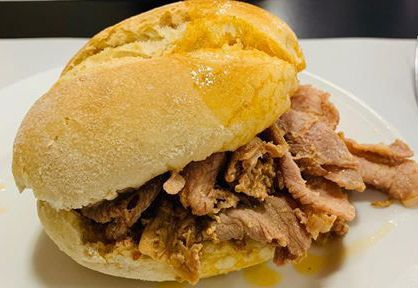

Bifana a moda do Porto

Description
Bifana is a typical Portuguese dish created in Vendas Novas. It consists of pork steaks, cooked with garlic, wine,
which are placed inside warmed bread.
They are usually seasoned with mustard or hot sauce.
This dish is typically served at the Festas Populares that take place throughout the country.
Ingredients
- 500 g beef steak (whole piece)
- 100 ml olive oil
- 25 cloves of garlic
- 1 tablespoon sweet bell pepper (or paprika)
- White pepper, freshly ground
- 2 or 3 small bay leaves
- 200 ml white wine
- 200 ml beer (one mini)
- 4 dl of beer
- 4 tablespoons of whiskey
- 2 tbsp. port wine
- 2 tbsp. English sauce
- 1 small lemon or half of 1 medium lemon
- Coarse salt to taste
- Hot sauce to taste (optional)
- 4 moletes (papo-sechos/carcasses)
Preparations instructions (steps)
TCut the meat into thick strips lengthwise and freeze.
When it is almost frozen use a very sharp knife to cut all the meat into very thin slivers.
Place it in a bowl and let it thaw completely.
Put the olive oil, the finely sliced garlic cloves, the sweet pepper, the pepper, and the bay leaf in a pan. Mix together, place on the heat,
and let the garlic fry a little to release the aroma without burning.
Add the wine, the beer, the whisky, the port, the English sauce, the hot sauce, if you use it, and a pinch of salt.
When it boils, add the thawed meat slices, mix them well in the sauce,
drizzle with the juice of half a lemon and put the other half of the lemon in the pan, without squeezing it.
Cook, covered, over a very low heat for about 45 minutes so that the meat is very tender - if at any time you find that you need more sauce,
add a little more beer or white wine.